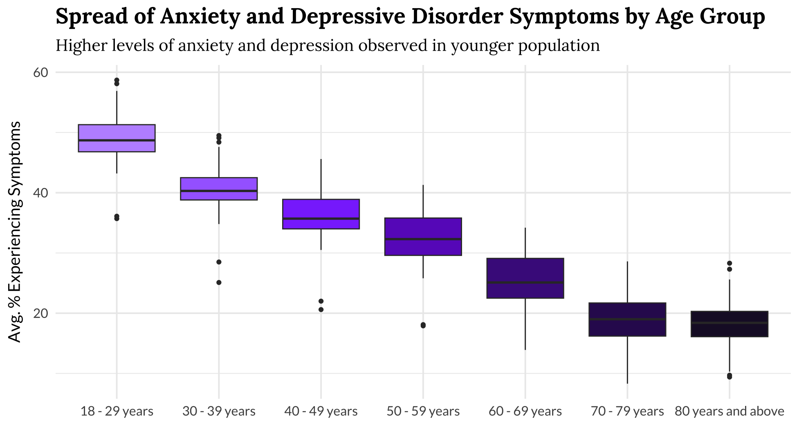

Escalating Mental Health Challenges Among American Youth During the COVID-19 Pandemic

- The data reveals that younger individuals, particularly those aged 18-29, exhibit higher median levels of anxiety and depressive symptoms.
- There is also a wide range of experiences within this age group. The length of the box in the plot, representing the interquartile range, shows that the middle 50% of young people experience a broad spectrum of symptom severity. This means that while some young individuals may have mild symptoms, others may experience much more severe levels of anxiety and depression.
➔
➔